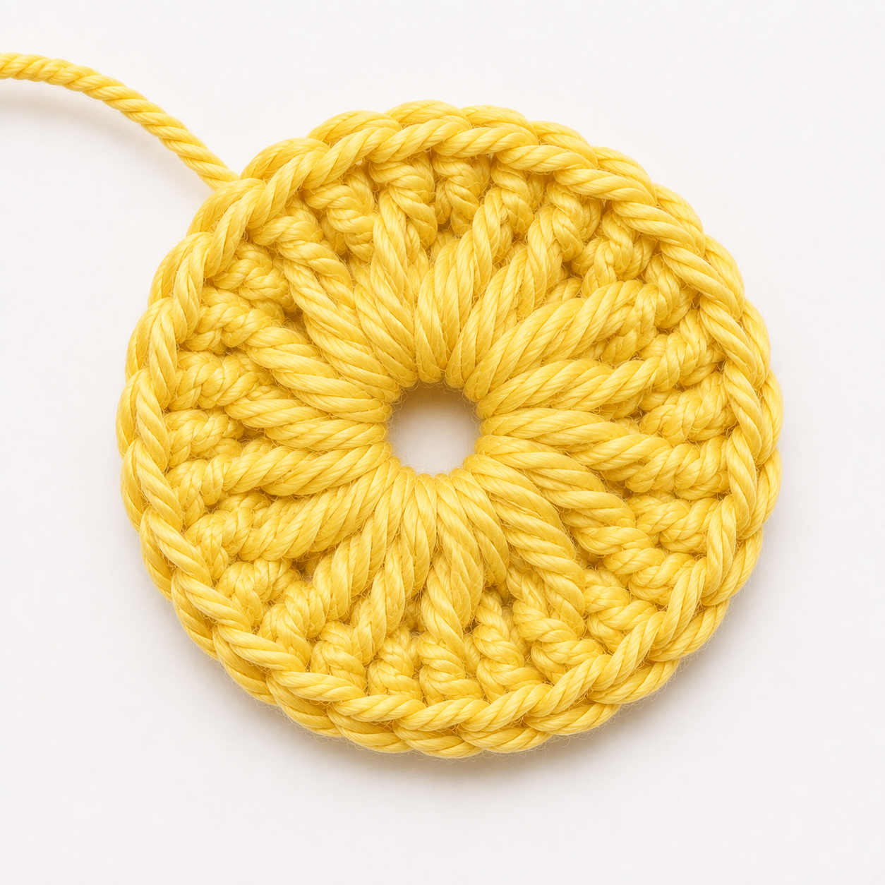
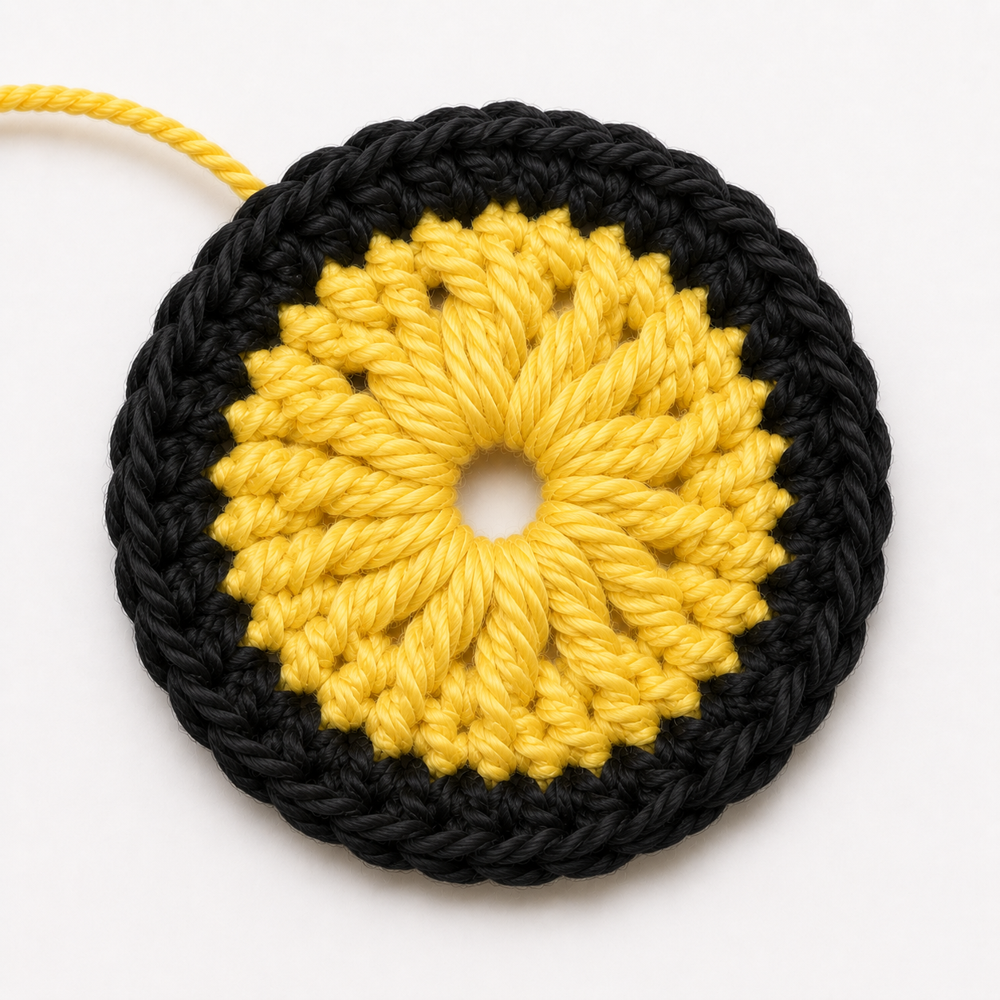
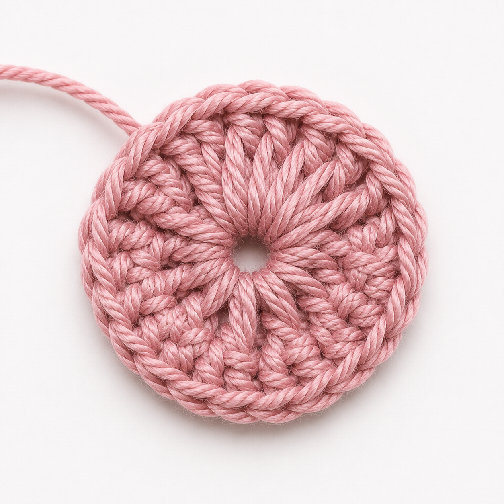

Crochet Bee
Estimated Time: 1 - 2 Hours
Materials Needed
- 4mm Crochet Hook
- Medium Weight Yarn (Yellow)
- Medium Weight Yarn (Black)
- Medium Weight Yarn (White)
- Medium Weight Yarn (Pink) (Optional)
- Scissors
- Yarn Needle
Abbreviations
- dc = Double Crochet
- hdc = Half Double Crochet
- sc = Single Crochet
- sl st = Slip Stitch
- mr = Magic Ring
- dec = Decrease
- Tr = Treble Crochet
Pattern Instructions (Body)

Step 1
Make a mr and place it onto your crochet hook.
Make sure it sits loosely on the hook so you can easily work into it.
Use yellow yarn.

Step 2 (R1)
6 sc into the mr.
Tighten the ring once you're done by pulling the tail to close the center hole.

Step 3 (R2)
2 sc into each stitch around the ring.
Use a stitch marker to mark the first stitch of the round to make it easier to track the number of rounds you've done.

Step 4 (R3)
Sc into the first stitch then 2 sc into the next stitch.
Repeat this pattern around the ring.

Step 5 (R4-5)
Sc for the next 2 rounds.
Switch to black yarn on the last stitch.

Step 6 (R6-7)
Sc for the next 2 rounds.
Switch to yellow yarn on the last stitch.
Step 7 (R8-11)
Sc for the next 4 rounds.
Switch to black yarn on the last stitch.
Step 8 (R12)
Sc for the entire round.
Step 9 (R13)
Sc for one stitch, then dec.
Repeat this pattern around the ring.
Step 10 (R14)
6 dec
Make sure each decrease contains 2 stitches.
Step 11 (R15)
3 dec
Stuff the bee and fasten off once you're done, ensuring there's a long strand of yarn left.
Make sure bee is firmly stuffed, then thread the yarn end onto the tapestry needle. Weave opening closed. Fasten off and weave in end.
Step 12
Attatch/stitch on the eyes using black yarn or safety eyes.
Use pink yarn for the blush. (Optional)
Pattern Instructions (Wings)
Step 1
Make a mr and place it onto your crochet hook.
Make sure it sits loosely on the hook so you can easily work into it.
Step 2
Inside the ring, make a sc, hdc, 3 tr, dc, hdc, sc.

Step 3
Cut the yarn, leaving a long thread and sew the start and the end of the wing together.
Weave in the end to secure it then sew it to the body.
Step 4
Repeat the same process for the second wing.